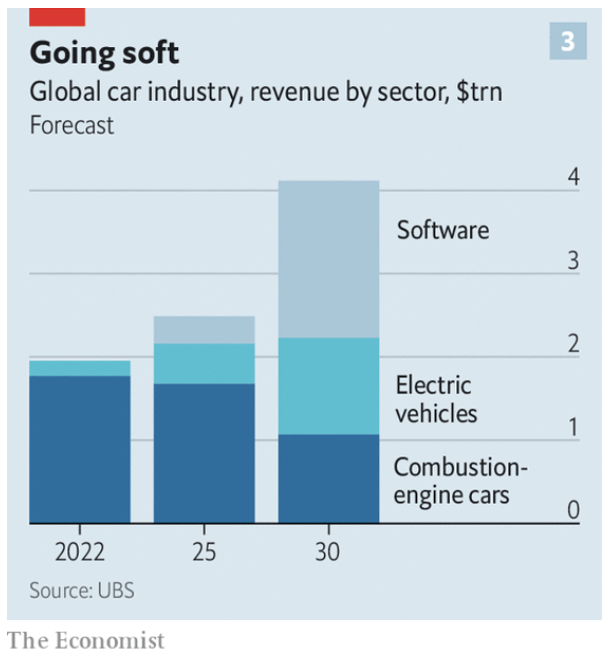

Summary: software engineers (especially leaders/managers up the tech hierarchy) should spend more time closer to the business, product, and marketing. They should treat it as part of their main responsibilities, not a nice-to-haves or if-have-times (which no one ever does).
A tweet from Shreyas confirmed something I’ve seen a lot – software engineering leadership focuses on technical problems, leaving business discussions to “the business”, or, more recently to “the product”. If not abandoning, then at least not thinking about this as a part of their main job – waiting for these magical stakeholders to have all the answers ready, while engineering will be focusing on tech things, prioritising tech debt, building internal tools, or what have you. I’m curious 1/ if that’s a software industry phenomenon, 2/ why is that happening, and 3/ what should engineers do, depending on the environment they are in.
I am increasingly of the opinion that engineering leaders & design leaders should be putting more pressure on their PM counterparts to help devise a sound product strategy. And this is absolutely vital if the business has been struggling. More process won’t solve this problem.
— Shreyas Doshi (@shreyas) January 21, 2023
Software
Stage 1: Support Function
In the early days of computers, IT was separate from business and played the role of a supporting function to automate business processes and provide better business insights. Business innovations were happening outside the “computers”, and business is not growing by optimising and investing in software.
IT, as a support function, operates in a “ticketing machine” environment where things are regulated or defined. An operational model of “just do what business tells” prevails and is also appropriate for the setup.
Stage 2: Transition Period (Support → Core)
Later on, software started percolating all the various areas of business and life and started to – famously – eat the world.
I don’t like this phrasing. It assumes that the endgame is only software, while I believe that the hardware will always be equally important, as proved recently by Apple and others – without the underlying layers, there will be nothing to build on top of.

This triggered a transition for software from a cost to a profit centre. It also exposed the ineffectiveness of the methods using rigid requirements and specifications, which, among other things, triggered the development of agile methodologies in software. These methods, however, attempted to fix the problem by establishing better interfaces between stakeholders. There was still a separation between the people who own the requirements, and the ones who implement them. However, this sets a trend of reducing dependencies and communication bottlenecks across different parts of building products.
But there was an opposite force at work at the same time – software becomes more complex. This drives specialisation and more vertical knowledge. Technical experts need to go deeper and deeper to understand their topics at the same level. This, in turn, drives separation and creates a talent gap, where there are not enough people experienced in both technology and business. For example, Amazon was one of the first companies that separated the roles of product and engineering leadership, because it was hard to find people that were good at both.
Stage 3: Software is Product
This brings us to the period of more mature software products and development environments. It removes more interfaces and awards the role of the final judge to the customer. Software becomes a product in itself. There are even products within products.
Elimination of more silos is happening. DevOps, SREs, and continuous delivery movements, with cloud-enabling this transition on the underlying layer, removed final barriers between development, testing, and infrastructure. Engineering teams started working together to deliver a product and not a set of functional competencies.
We’ve learned to build software relatively fast and of good quality. However, we do not always build what is needed for the user. The last gap standing is between engineering and business. This gap is responsible for creating engineering silos, software platforms that cannot support unit economics of business, and engineering for the sake of engineering, where you end up with systems inappropriately built for the size and scale of the business (no matter up or down), and cargo-culting with the best practices not adding value in a particular situation.
The reality is not evenly distributed, of course. Still, it’s happening way too often (so much that the opinion is unpopular) in companies of all shapes and sizes. A lot of time business finds themselves hostage to tech decisions, not realising before that those decisions are business decisions now.
to connect services to business through data.
— Elias (@eliasnema) January 31, 2023
"Business processes and domains were subordinate to applications."
This resonates, and I've multiple times seen the business end up hostage to the tech stack at some point in a company's evolution.
Other industries
At the beginning of my career, I worked in a couple of mechanical engineering companies, producing “real” objects. The environments I experienced there were different from software, but generally, engineers were not much closer to the product and business decisions. There were also no product managers to support them and close the gap.
This, however, resulted in less over-engineered solutions or products that were completely off than I’ve seen working in software. But one explanation of this might be that when building physical products we have more constraints from the real world, while the possibility space is much wider with software. This increases variability in opinions and potential solution space, which makes communication through specifications even harder.
But going back in history, it turns out, that as with many problems, this one is not new at all. Businesses started experiencing similar problems at least 70 years back when tech had yet nothing to do with software. Recently, I stumbled upon this paper from 1951 describing the changing role of management.
What’s fascinating is that already back then, the author notices that management nature changes, with factors such as human capital, research, and marketing starting to play as crucial of a role as science and engineering. Here are more quotes and thoughts from it.
{kind=link}
Conclusion
I don’t think that all companies will or should turn into software product companies. But you need to understand the environment you are in. And to converge sooner from Stage 2 to either 1 (cost) or 3 (profit).
The two competing factors in tech and management are not going away any time soon: tech develops rapidly, complexity continues to grow, this drives specialisation. On the other hand, this leaves even less room for the defined requirements and specs, hence, creating a pull for cross-functional specialists.
The main task of an engineering team is to deliver a product. And your goal as a leader is to ensure this delivery. For this, you need to understand technology and engineering. But if the business you are working on has engineering at its core, your responsibilities stretch much further than just that:
- Understand people, and their motivations and build connections (this aspect is more universally accepted now).
- Understand where your team’s value creation is happening in the business and marketing cycle.
- Tie the tech stack to the business decisions and make sure your team’s progress metrics are connected to the success of the company, not just the software development progress.
- Proactively build connections with product, marketing, legal, etc., or partially cover those roles yourself. Depending on the company you might have dedicated managers leading those directions, but that’s part of your role to proactively work with them on the engineering and business strategies.